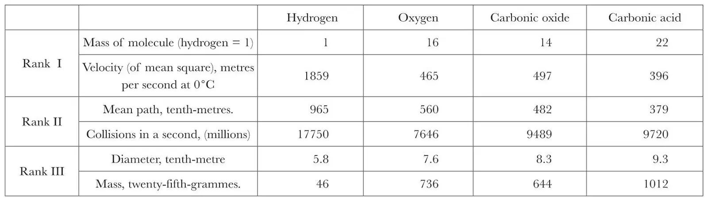
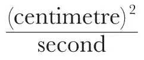
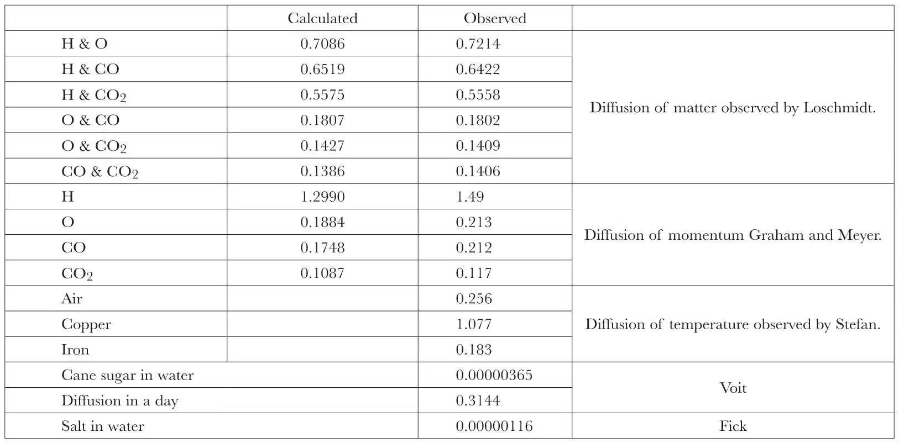

中文
中文J. C. Maxwell
Editor’s Note
James Clerk Maxwell was sometimes accused of being a poor lecturer, but this talk delivered to the British Association offers a lucid, engaging picture of the current understanding of the molecular nature of matter. Maxwell made a decisive contribution himself with his kinetic theory of gases, which explained how the macroscopic properties of gases, such as the laws relating pressure, volume and temperature, could be explained from the microscopic motions of the constituent particles. Maxwell’s estimate of the size of a hydrogen molecule is only slightly bigger than the modern view. And his discussion of molecular diffusion anticipates the work of Albert Einstein and Jean Perrin on Brownian motion that provided the first real evidence for molecules as physical entities. 中文
AN atom is a body which cannot be cut in two. A molecule is the smallest possible portion of a particular substance. No one has ever seen or handled a single molecule. Molecular science, therefore, is one of those branches of study which deal with things invisible and imperceptible by our senses, and which cannot be subjected to direct experiment. 中文
The mind of man has perplexed itself with many hard questions. Is space infinite, and if so in what sense? Is the material world infinite in extent, and are all places within that extent equally full of matter? Do atoms exist, or is matter infinitely divisible? 中文
The discussion of questions of this kind has been going on ever since men began to reason, and to each of us, as soon as we obtain the use of our faculties, the same old questions arise as fresh as ever. They form as essential a part of the science of the nineteenth century of our era, as of that of the fifth century before it. 中文
We do not know much about the science organisation of Thrace twenty-two centuries ago, or of the machinery then employed for diffusing an interest in physical research. There were men, however, in those days, who devoted their lives to the pursuit of knowledge with an ardour worthy of the most distinguished members of the British Association; and the lectures in which Democritus explained the atomic theory to his fellow-citizens of Abdera realised, not in golden opinions only, but in golden talents, a sum hardly equalled even in America. 中文
To another very eminent philosopher, Anaxagoras, best known in the world as the teacher of Socrates, we are indebted for the most important service to the atomic theory, which, after its statement by Democritus, remained to be done. Anaxagoras, in fact, stated a theory which so exactly contradicts the atomic theory of Democritus that the truth or falsehood of the one theory implies the falsehood or truth of the other. The question of the existence or non-existence of atoms cannot be presented to us this evening with greater clearness than in the alternative theories of these two philosophers. 中文
Take any portion of matter, say a drop of water, and observe its properties. Like every other portion of matter we have ever seen, it is divisible. Divide it in two, each portion appears to retain all the properties of the original drop, and among others that of being divisible. The parts are similar to the whole in every aspect except in absolute size. 中文
Now go on repeating the process of division till the separate portions of water are so small that we can no longer perceive or handle them. Still we have no doubt that the sub-division night be carried further, if our senses were more acute and our instruments more delicate. Thus far all are agreed, but now question arises, Can this sub-division be repeated for ever? 中文
According to Democritus and the atomic school, we must answer in the negative. After a certain number of sub-divisions, the drop would be divided into a number of parts each of which is incapable of further sub-division. We should thus, in imagination, arrive at the atom, which, as its name literally signifies, cannot be cut in two. This is the atomic doctrine of Democritus, Epicurus, and Lucretius, and, I may add, of your lecturer. 中文
According to Anaxagoras, on the other hand, the parts into which the drop is divided, are in all respects similar to the whole drop, the mere size of a body counting for nothing as regards the nature of its substance. Hence if the whole drop is divisible, so are its parts down to the minutest sub-divisions, and that without end. 中文
The essence of the doctrine of Anaxagoras is that the parts of a body are in all respects similar to the whole. It was therefore called the doctrine of Homoiomereia. Anaxagoras did not of course assert this of the parts of organised bodies such as men and animals, but he maintained that those inorganic substances which appear to us homogeneous are really so, and that the universal experience of mankind testifies that every material body, without exception, is divisible. 中文
The doctrine of atoms and that of homogeneity are thus in direct contradiction. 中文
But we must now go on to molecules. Molecule is a modern word. It does not occur in Johnson’s Dictionary. The ideas it embodies are those belonging to modern chemistry. 中文
A drop of water, to return to our former example, may be divided into a certain number, and no more, of portions similar to each other. Each of these the modern chemist calls a molecule of water. But it is by no means an atom, for it contains two different substances, oxygen and hydrogen, and by a certain process the molecule may be actually divided into two parts, one consisting of oxygen and the other of hydrogen. According to the received doctrine, in each molecule of water there are two molecules of hydrogen and one of oxygen. Whether these are or are not ultimate atoms I shall not attempt to decide. 中文
We now see what a molecule is, as distinguished from an atom. 中文
A molecule of a substance is a small body such that if, on the one hand, a number of similar molecules were assembled together they would form a mass of that substance, while on the other hand, if any portion of this molecule were removed, it would no longer be able, along with an assemblage of other molecules similarly treated, to make up a mass of the original substance. 中文
Every substance, simple or compound, has its own molecule. If this molecule be divided, its parts are molecules of a different substance or substances from that of which the whole is a molecule. An atom, if there is such a thing, must be a molecule of an elementary substance. Since, therefore, every molecule is not an atom, but every atom is a molecule, I shall use the word molecule as the more general term. 中文
I have no intention of taking up your time by expounding the doctrines of modern chemistry with respect to the molecules of different substances. It is not the special but the universal interest of molecular science which encourages me to address you. It is not because we happen to be chemists or physicists or specialists of any kind that we are attracted towards this centre of all material existence, but because we all belong to a race endowed with faculties which urge us on to search deep and ever deeper into the nature of things. 中文
We find that now, as in the days of the earliest physical speculations, all physical researches appear to converge towards the same point, and every inquirer, as he looks forward into the dim region towards which the path of discovery is leading him, sees, each according to his sight, the vision of the same quest. 中文
One may see the atom as a material point, invested and surrounded by potential forces. Another sees no garment of force, but only the bare and utter hardness of mere impenetrability. 中文
But though many a speculator, as he has seen the vision recede before him into the innermost sanctuary of the inconceivably little, has had to confess that the quest was not for him, and though philosophers in every age have been exhorting each other to direct their minds to some more useful and attainable aim, each generation, from the earliest dawn of science to the present time, has contributed a due proportion of its ablest intellects to the quest of the ultimate atom. 中文
Our business this evening is to describe some researches in molecular science, and in particular to place before you any definite information which has been obtained respecting the molecules themselves. The old atomic theory, as described by Lucretius and revived in modern times, asserts that the molecules of all bodies are in motion, even when the body itself appears to be at rest. These motions of molecules are in the case of solid bodies confined within so narrow a range that even with our best microscopes we cannot detect that they alter their places at all. In liquids and gases, however, the molecules are not confined within any definite limits, but work their way through the whole mass, even when that mass is not disturbed by any visible motion. 中文
This process of diffusion, as it is called, which goes on in gases and liquids and even in some solids, can be subjected to experiment, and forms one of the most convincing proofs of the motion of molecules. 中文
Now the recent progress of molecular science began with the study of the mechanical effect of the impact of these moving molecules when they strike against any solid body. Of course these flying molecules must beat against whatever is placed among them, and the constant succession of these strokes is, according to our theory, the sole cause of what is called the pressure of air and other gases. 中文
This appears to have been first suspected by Daniel Bernoulli, but he had not the means which we now have of verifying the theory. The same theory was afterwards brought forward independently by Lesage, of Geneva, who, however, devoted most of his labour to the explanation of gravitation by the impact of atoms. Then Herapath, in his “Mathematical Physics”, published in 1847, made a much more extensive application of the theory to gases, and Dr. Joule, whose absence from our meeting we must all regret, calculated the actual velocity of the molecules of hydrogen. 中文
The further development of the theory is generally supposed to have been begun with a paper by Krönig, which does not, however, so far as I can see, contain any improvement on what had gone before. It seems, however, to have drawn the attention of Prof. Clausius to the subject, and to him we owe a very large part of what has been since accomplished. 中文
We all know that air or any other gas placed in a vessel presses against the sides of the vessel, and against the surface of any body placed within it. On the kinetic theory this pressure is entirely due to the molecules striking against these surfaces, and thereby communicating to them a series of impulses which follow each other in such rapid succession that they produce an effect which cannot be distinguished from that of a continuous pressure. 中文
If the velocity of the molecules is given, and the number varied, then since each molecule, on an average, strikes the side of the vessel the same number of times, and with an impulse of the same magnitude, each will contribute an equal share to the whole pressure. The pressure in a vessel of given size is therefore proportional to the number of molecules in it, that is to the quantity of gas in it. 中文
This is the complete dynamical explanation of the fact discovered by Robert Boyle, that the pressure of air is proportional to its density. It shows also that of different portions of gas forced into a vessel, each produces its own part of the pressure independently of the rest, and this whether these portions be of the same gas or not. 中文
Let us next suppose that the velocity of the molecules is increased. Each molecule will now strike the sides of the vessel a greater number of times in a second, but besides this, the impulse of each blow will be increased in the same proportion, so that the part of the pressure due to each molecule will vary as the square of the velocity. Now the increase of the square of velocity corresponds, in our theory, to a rise of temperature, and in this way we can explain the effect of warming the gas, and also the law discovered by Charles that the proportional expansion of all gases between given temperatures is the same. 中文
The dynamical theory also tells us what will happen if molecules of different masses are allowed to knock about together. The greater masses will go slower than the smaller ones, so that, on an average, every molecule, great or small, will have the same energy of motion. 中文
The proof of this dynamical theorem, in which I claim the priority, has recently been greatly developed and improved by Dr. Ludwig Boltzmann. The most important consequence which flows from it is that a cubic centimetre of every gas at standard temperature and pressure contains the same number of molecules. This is the dynamical explanation of Gay Lussac’s law of the equivalent volumes of gases. But we must now descend to particulars, and calculate the actual velocity of a molecule of hydrogen. 中文
A cubic centimetre of hydrogen, at the temperature of melting ice and at a pressure of one atmosphere, weighs 0.00008954 grammes. We have to find at what rate this small mass must move (whether altogether or in separate molecules makes no difference) so as to produce the observed pressure on the sides of the cubic centimetre. This is the calculation which was first made by Dr. Joule, and the result is 1,859 metres per second. This is what we are accustomed to call a great velocity. It is greater than any velocity obtained in artillery practice. The velocity of other gases is less, as you will see by the table, but in all cases it is very great as compared with that of bullets. 中文
We have now to conceive the molecules of the air in this hall flying about in all directions, at a rate of about seventeen miles in a minute. 中文
If all these molecules were flying in the same direction, they would constitute a wind blowing at the rate of seventeen miles a minute, and the only wind which approaches this velocity is that which proceeds from the mouth of a cannon. How, then, are you and I able to stand here? Only because the molecules happen to be flying in different directions, so that those which strike against our backs enable us to support the storm which is beating against our faces. Indeed, if this molecular bombardment were to cease, even for an instant, our veins would swell, our breath would leave us, and we should, literally, expire. But it is not only against us or against the walls of the room that the molecules are striking. Consider the immense number of them, and the fact that they are flying in every possible direction, and you will see that they cannot avoid striking each other. Every time that two molecules come into collision, the paths of both are changed, and they go off in new directions. Thus each molecule is continually getting its course altered, so that in spite of its great velocity it may be a long time before it reaches any great distance from the point at which it set out. 中文
I have here a bottle containing ammonia. Ammonia is a gas which you can recognise by its smell. Its molecules have a velocity of six hundred metres per second, so that if their course had not been interrupted by striking against the molecules of air in the hall, everyone in the most distant gallery would have smelt ammonia before I was able to pronounce the name of the gas. But instead of this, each molecule of ammonia is so jostled about by the molecules of air, that it is sometimes going one way and sometimes another. It is like a hare which is always doubling, and though it goes a great pace, it makes very little progress. Nevertheless, the smell of ammonia is now beginning to be perceptible at some distance from the bottle. The gas does diffuse itself through the air, though the process is a slow one, and if we could close up every opening of this hall so as to make it air-tight, and leave everything to itself for some weeks, the ammonia would become uniformly mixed through every part of the air in the hall. 中文
This property of gases, that they diffuse through each other, was first remarked by Priestley. Dalton showed that it takes place quite independently of any chemical action between the inter-diffusing gases. Graham, whose researches were especially directed towards those phenomena which seem to throw light on molecular motions, made a careful study of diffusion, and obtained the first results from which the rate of diffusion can be calculated. 中文
Still more recently the rates of diffusion of gases into each other have been measured with great precision by Prof. Loschmidt of Vienna. 中文
He placed the two gases in two similar vertical tubes, the lighter gas being placed above the heavier, so as to avoid the formation of currents. He then opened a sliding valve, so as to make the two tubes into one, and after leaving the gases to themselves for an hour or so, he shut the valve, and determined how much of each gas had diffused into the other. 中文
As most gases are invisible, I shall exhibit gaseous diffusion to you by means of two gases, ammonia and hydrochloric acid, which, when they meet, form a solid product. The ammonia, being the lighter gas, is placed above the hydrochloric acid, with a stratum of air between, but you will soon see that the gases can diffuse through this stratum of air, and produce a cloud of white smoke when they meet. During the whole of this process no currents or any other visible motion can be detected. Every part of the vessel appears as calm as a jar of undisturbed air. 中文
But, according to our theory, the same kind of motion is going on in calm air as in the inter-diffusing gases, the only difference being that we can trace the molecules from one place to another more easily when they are of a different nature from those through which they are diffusing. 中文
If we wish to form a mental representation of what is going on among the molecules in calm air, we cannot do better than observe a swarm of bees, when every individual bee is flying furiously, first in one direction, and then in another, while the swarm, as a whole, either remains at rest, or sails slowly through the air. 中文
In certain seasons, swarms of bees are apt to fly off to a great distance, and the owners, in order to identify their property when they find them on other people’s ground, sometimes throw handfulls of flour at the swarm. Now let us suppose that the flour thrown at the flying swarm has whitened those bees only which happened to be in the lower half of the swarm, leaving those in the upper half free from flour. 中文
If the bees still go on flying hither and thither in an irregular manner, the floury bees will be found in continually increasing proportions in the upper part of the swarm, till they have become equally diffused through every part of it. But the reason of this diffusion is not because the bees were marked with flour, but because they are flying about. The only effect of the marking is to enable us to identify certain bees. 中文
We have no means of marking a select number of molecules of air, so as to trace them after they have become diffused among others, but we may communicate to them some property by which we may obtain evidence of their diffusion. 中文
For instance, if a horizontal stratum of air is moving horizontally, molecules diffusing out of this stratum into those above and below will carry their horizontal motion with them, and so tend to communicate motion to the neighbouring strata, while molecules diffusing out of the neighbouring strata into the moving one will tend to bring it to rest. The action between the strata is somewhat like that of two rough surfaces, one of which slides over the other, rubbing on it. Friction is the name given to this action between solid bodies; in the case of fluids it is called internal friction or viscosity. 中文
It is in fact only another kind of diffusion—a lateral diffusion of momentum, and its amount can be calculated from data derived from observations of the first kind of diffusion, that of matter. The comparative values of the viscosity of different gases were determined by Graham in his researches on the transpiration of gases through long narrow tubes, and their absolute values have been deduced from experiments on the oscillation of discs by Oscar Meyer and myself. 中文
Another way of tracing the diffusion of molecules through calm air is to heat the upper stratum of the air in a vessel, and so observe the rate at which this heat is communicated to the lower strata. This, in fact, is a third kind of diffusion—that of energy, and the rate at which it must take place was calculated from data derived from experiments on viscosity before any direct experiments on the conduction of heat had been made. Prof. Stefan, of Vienna, has recently, by a very delicate method, succeeded in determining the conductivity of air, and he finds it, as he tells us, in striking agreement with the value predicted by the theory. 中文
All these three kinds of diffusion—the diffusion of matter, of momentum, and of energy—are carried on by the motion of the molecules. The greater the velocity of the molecules and the farther they travel before their paths are altered by collision with other molecules, the more rapid will be the diffusion. Now we know already the velocity of the molecules, and therefore by experiments on diffusion we can determine how far, on an average, a molecule travels without striking another. Prof. Clausius, of Bonn, who first gave us precise ideas about the motion of agitation of molecules, calls this distance the mean path of a molecule. I have calculated, from Prof. Loschmidt’s diffusion experiments, the mean path of the molecules of four well-know gases. The average distance travelled by a molecule between one collision and another is given in the table. It is a very small distance, quite imperceptible to us even with our best microscopes. Roughly speaking, it is about the tenth part of the length of a wave of light, which you know is a very small quantity. Of course the time spent on so short a path by such swift molecules must be very small. I have calculated the number of collisions which each must undergo in a second. They are given in the table and are reckoned by thousands of millions. No wonder that the travelling power of the swiftest molecule is but small, when its course is completely changed thousands of millions of times in a second. 中文
The three kinds of diffusion also take place in liquids, but the relation between the rates at which they take place is not so simple as in the case of gases. The dynamical theory of liquids is not so well understood as that of gases, but the principal difference between a gas and a liquid seems to be that in a gas each molecule spends the greater part of its time in describing its free path, and is for a very small portion of its time engaged in encounters with other molecules, whereas in a liquid the molecule has hardly any free path, and is always in a state of close encounter with other molecules. 中文
Hence in a liquid the diffusion of motion from one molecule to another takes place much more rapidly than the diffusion of the molecules themselves, for the same reason that it is more expeditious in a dense crowd to pass on a letter from hand to hand than to give it to a special messenger to work his way through the crowd. I have here a jar, the lower part of which contains a solution of copper sulphate, while the upper part contains pure water. It has been standing here since Friday, and you see how little progress the blue liquid has made in diffusing itself through the water above. The rate of diffusion of a solution of sugar has been carefully observed by Voit. Comparing his results with those of Loschmidt on gases, we find that about as much diffusion takes place in a second in gases as requires a day in liquids. 中文
The rate of diffusion of momentum is also slower in liquids than in gases, but by no means in the same proportion. The same amount of motion takes about ten times as long to subside in water as in air, as you will see by what takes place when I stir these two jars, one containing water and the other air. There is still less difference between the rates at which a rise of temperature is propagated through a liquid and through a gas. 中文
In solids the molecules are still in motion, but their motions are confined within very narrow limits. Hence the diffusion of matter does not take place in solid bodies, though that of motion and heat takes place very freely. Nevertheless, certain liquids can diffuse through colloid solids, such as jelly and gum, and hydrogen can make its way through iron and palladium. 中文
We have no time to do more than mention that most wonderful molecular motion which is called electrolysis. Here is an electric current passing through acidulated water, and causing oxygen to appear at one electrode and hydrogen at the other. In the space between, the water is perfectly calm, and yet two opposite currents of oxygen and of hydrogen must be passing through it. The physical theory of this process has been studied by Clausius, who has given reasons for asserting that in ordinary water the molecules are not only moving, but every now and then striking each other with such violence that the oxygen and hydrogen of the molecules part company, and dance about through the crowd, seeking partners which have become dissociated in the same way. In ordinary water these exchanges produce, on the whole, no observable effect, but no sooner does the electromotive force begin to act than it exerts its guiding influence on the unattached molecules, and bends the course of each toward its proper electrode, till the moment when, meeting with an unappropriated molecule of the opposite kind, it enters again into a more or less permanent union with it till it is again dissociated by another shock. Electrolysis, therefore, is a kind of diffusion assisted by electromotive force. 中文
Another branch of molecular science is that which relates to the exchange of molecules between a liquid and a gas. It includes the theory of evaporation and condensation, in which the gas in question is the vapour of the liquid, and also the theory of the absorption of a gas by a liquid of a different substance. The researches of Dr. Andrews on the relations between the liquid and the gaseous state have shown us that though the statements in our own elementary text-books may be so neatly expressed that they appear almost self-evident, their true interpretation may involve some principle so profound that, till the right man has laid hold of it, no one ever suspects that anything is left to be discovered. 中文
These, then, are, some of the fields from which the data of molecular science are gathered. We may divide the ultimate results into three ranks, according to the completeness of our knowledge of them. 中文
To the first rank belong the relative masses of the molecules of different gases, and their velocities in metres per second. These data are obtained from experiments on the pressure and density of gases, and are known to a high degree of precision. 中文
In the second rank we must place the relative size of the molecules of different gases, the length of their mean paths, and the number of collisions in a second. These quantities are deduced from experiments on the three kinds of diffusion. Their received values must be regarded as rough approximations till the methods of experimenting are greatly improved. 中文
There is another set of quantities which we must place in the third rank, because our knowledge of them is neither precise, as in the first rank, nor approximate, as in the second, but is only as yet of the nature of a probable conjecture. These are the absolute mass of a molecule, its absolute diameter, and the number of molecules in a cubic centimetre. We know the relative masses of different molecules with great accuracy, and we know their relative diameters approximately. From these we can deduce the relative densities of the molecules themselves. So far we are on firm ground. 中文
The great resistance of liquids to compression makes it probable that their molecules must be at about the same distance from each other as that at which two molecules of the same substance in the gaseous form act on each other during an encounter. This conjecture has been put to the test by Lorenz Meyer, who has compared the densities of different liquids with the calculated relative densities of the molecules of their vapours, and has found a remarkable correspondence between them. 中文
Now Loschmidt has deduced from the dynamical theory the following remarkable proportion:—As the volume of a gas is to the combined volume of all the molecules contained in it, so is the mean path of a molecule to one-eighth of the diameter of a molecule. 中文
Assuming that the volume of the substance, when reduced to the liquid form, is not much greater than the combined volume of the molecules, we obtain from this proportion the diameter of a molecule. In this way Loschmidt, in 1865, made the first estimate of the diameter of a molecule. Independently of him and of each other, Mr. Stoney in 1868, and Sir W. Thomson in 1870, published results of a similar kind, those of Thomson being deduced not only in this way, but from considerations derived from the thickness of soap bubbles, and from the electric properties of metals. 中文
According to the table, which I have calculated from Loschmidt’s data, the size of the molecules of hydrogen is such that about two million of them in a row would occupy a millimetre, and a million million million million of them would weigh between four and five grammes. 中文
In a cubic centimetre of any gas at standard pressure and temperature there are about nineteen million million million molecules. All these numbers of the third rank are, I need not tell you, to be regarded as at present conjectural. In order to warrant us in putting any confidence in numbers obtained in this way, we should have to compare together a greater number of independent data than we have as yet obtained, and to show that they lead to consistent results. 中文
Thus far we have been considering molecular science as an inquiry into natural phenomena. But though the professed aim of all scientific work is to unravel the secrets of nature, it has another effect, not less valuable, on the mind of the worker. It leaves him in possession of methods which nothing but scientific work could have led him to invent, and it places him in a position from which many regions of nature, besides that which he has been studying, appear under a new aspect. 中文
The study of molecules has developed a method of its own, and it has also opened up new views of nature. 中文
When Lucretius wishes us to form a mental representation of the motion of atoms, he tells us to look at a sunbeam shining through a darkened room (the same instrument of research by which Dr. Tyndall makes visible to us the dust we breathe,) and to observe the motes which chase each other in all directions through it. This motion of the visible motes, he tells us, is but a result of the far more complicated motion of the invisible atoms which knock the motes about. In his dream of nature, as Tennyson tells us, he
“saw the flaring atom-streams
And torrents of her myriad universe,
Ruining along the illimitable inane,
Fly on to clash together again, and make
Another and another frame of things
For ever.”
And it is no wonder that he should have attempted to burst the bonds of Fate by making his atoms deviate from their courses at quite uncertain times and places, thus attributing to them a kind of irrational free will, which on his materialistic theory is the only explanation of that power of voluntary action of which we ourselves are conscious. 中文
As long as we have to deal with only two molecules, and have all the data given us, we can calculate the result of their encounter, but when we have to deal with millions of molecules, each of which has millions of encounters in a second, the complexity of he problem seems to shut out all hope of a legitimate solution. 中文
The modern atomists have therefore adopted a method which is I believe new in the department of mathematical physics, though it has long been in use in the Section of Statistics. When the working members of Section F get hold of a Report of the Census, or any other document containing the numerical data of Economic and Social Science, they begin by distributing the whole population into groups, according to age, income-tax, education, religious belief, or criminal convictions. The number of individuals is far too great to allow of their tracing the history of each separately, so that, in order to reduce their labour within human limits, they concentrate their attention on a small number of artificial groups. The varying number of individuals in each group, and not the varying state of each individual, is the primary datum from which they work. 中文
This, of course, is not the only method of studying human nature. We may observe the conduct of individual men and compare it with that conduct which their previous character and their present circumstances, according to the best existing theory, would lead us to expect. Those who practise this method endeavour to improve their knowledge of the elements of human nature, in much the same way as an astronomer corrects the elements of a planet by comparing its actual position with that deduced from the received elements. The study of human nature by parents and schoolmasters, by historians and statesmen, is therefore to be distinguished from that carried on by registrars and tabulators, and by those statesmen who put their faith in figures. The one may be called the historical, and the other the statistical method. 中文
The equations of dynamics completely express the laws of the historical method as applied to matter, but the application of these equations implies a perfect knowledge of all the data. But the smallest portion of matter which we can subject to experiment consists of millions of molecules, not one of which ever becomes individually sensible to us. We cannot, therefore, ascertain the actual motion of any one of these molecules, so that we are obliged to abandon the strict historical method, and to adopt the statistical method of dealing with large groups of molecules. 中文
The data of the statistical method as applied to molecular science are the sums of large numbers of molecular quantities. In studying the relations between quantities of this kind, we meet with a new kind of regularity, the regularity of averages, which we can depend upon quite sufficiently for all practical purposes, but which can make no claim to that character of absolute precision which belongs to the laws of abstract dynamics. 中文
Thus molecular science teaches us that our experiments can never give us anything more than statistical information, and that no law deduced from them can pretend to absolute precision. But when we pass from the contemplation of our experiments to that of the molecules themselves, we leave the world of chance and change, and enter a region where everything is certain and immutable. 中文
The molecules are conformed to a constant type with a precision which is not to be found in the sensible properties of the bodies which they constitute. In the first place the mass of each individual molecule, and all its other properties, are absolutely unalterable. In the second place the properties of all molecules of the same kind are absolutely identical. 中文
Let us consider the properties of two kinds of molecules, those of oxygen and those of hydrogen. 中文
We can procure specimens of oxygen from very different sources—from the air, from water, from rocks or every geological epoch. The history of these specimens has been very different, and if, during thousands of years, difference of circumstances could produce difference of properties, these specimens of oxygen would show it. 中文
In like manner we may procure hydrogen from water, from coal, or, as Graham did, from meteoric iron. Take two litres of any specimen of hydrogen, it will combine with exactly one litre of any specimen of oxygen, and will form exactly two litres of the vapour of water. 中文
Now if, during the whole previous history of either specimen, whether imprisoned in the rocks, flowing in the sea, or careering through unknown regions with the meteorites, any modification of the molecules had taken place, these relations would no longer be preserved. 中文
But we have another and an entirely different method of comparing the properties of molecules. The molecule, though indestructible, is not a hard rigid body, but is capable of internal movements, and when these are excited it emits rays, the wavelength of which is a measure of the time of vibration of the molecule. 中文
By means of the spectroscope the wavelengths of different kinds of light may be compared to within one ten-thousandth part. In this way it has been ascertained, not only that molecules taken from every specimen of hydrogen in our laboratories have the same set of periods of vibration, but that light, having the same set of periods of vibration, is emitted from the sun and from the fixed stars. 中文
We are thus assured that molecules of the same nature as those of our hydrogen exist in those distant regions, or at least did exist when the light by which we see them was emitted. 中文
From a comparison of the dimensions of the buildings of the Egyptians with those of the Greeks, it appears that they have a common measure. Hence, even if no ancient author had recorded the fact that the two nations employed the same cubit as a standard of length, we might prove it from the buildings themselves. We should also be justified in asserting that at some time or other a material standard of length must have been carried from one country to the other, or that both countries had obtained their standards from a common source. 中文
But in the heavens we discover by their light, and by their light alone, stars so distant from each other that no material thing can ever have passed from one to another, and yet this light, which is to us the sole evidence of the existence of these distant worlds, tells us also that each of them is built up of molecules of the same kinds as those which we find on earth. A molecule of hydrogen, for example, whether in Sirius or in Arcturus, executes its vibrations in precisely the same time. 中文
Each molecule, therefore, throughout the universe, bears impressed on it the stamp of a metric system as distinctly as does the metre of the Archives at Paris, or the double royal cubit of the Temple of Karnac. 中文
No theory of evolution can be formed to account for the similarity of molecules, for evolution necessarily implies continuous change, and the molecule is incapable of growth or decay, of generation or destruction. 中文
None of the processes of Nature, since the time when Nature began, have produced the slightest difference in the properties of any molecule. We are therefore unable to ascribe either the existence of the molecules or the identity of their properties to the operation of any of the causes which we call natural. 中文
On the other hand, the exact quality of each molecule to all others of the same kind gives it, as Sir John Herschel has well said, the essential character of a manufactured article, and precludes the idea of its being eternal and self existent. 中文
Thus we have been led, along a strictly scientific path, very near to the point at which Science must stop. Not that Science is debarred from studying the internal mechanism of a molecule which she cannot take to pieces, any more than from investigating an organism which she cannot put together. But in tracing back the history of matter Science is arrested when she assures herself, on the one hand, that the molecule has been made, and on the other that it has not been made by any of the processes we call natural. 中文
Science is incompetent to reason upon the creation of matter itself out of nothing. We have reached the utmost limit of our thinking faculties when we have admitted that because matter cannot be eternal and self-existent it must have been created. 中文
It is only when we contemplate, not matter in itself, but the form in which it actually exists, that our mind finds something on which it can lay hold. 中文
That matter, as such, should have certain fundamental properties—that it should exist in space and be capable of motion, that its motion should be persistent, and so on, are truths which may, for anything we know, be of the kind which metaphysicians call necessary. We may use our knowledge of such truths for purposes of deduction but we have no data for speculating as to their origin. 中文
But that there should be exactly so much matter and no more in every molecule of hydrogen is a fact of a very different order. We have here a particular distribution of matter—a collocation—to use the expression of Dr. Chalmers, of things which we have no difficulty in imagining to have been arranged otherwise. 中文
The form and dimensions of the orbits of the planets, for instance, are not determined by any law of nature, but depend upon a particular collocation of matter. The same is the case with respect to the size of the earth, from which the standard of what is called the metrical system has been derived. But these astronomical and terrestrial magnitudes are far inferior in scientific importance to that most fundamental of all standards which forms the base of the molecular system. Natural causes, as we know, are at work, which tend to modify, if they do not at length destroy, all the arrangements and dimensions of the earth and the whole solar system. But though in the course of ages catastrophes have occurred and may yet occur in the heavens, though ancient systems may be dissolved and new systems evolved out of their ruins, the molecules out of which these systems are built—the foundation stones of the material universe—remain unbroken and unworn. 中文
They continue this day as they were created, perfect in number and measure and weight, and from the ineffaceable characters impressed on them we may learn that those aspirations after accuracy in measurement, truth in statement, and justice in action, which we reckon among our noblest attributes as men, are ours because they are essential constituents of the image of Him Who in the beginning created, not only the heaven and the earth, but the materials of which heaven and earth consist. 中文
Table of Moncular Date

Table of Diffusion:

measure
(8, 437-441; 1873)
* Lecture delivered before the British Association at Bradford, by Prof. Clerk Maxwell, F. R. S.